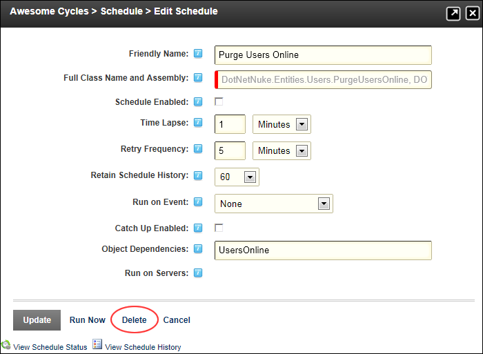

Deleting a Schedule Task
How to permanently delete a scheduled task for the Schedule module. As an alternative you can disable a task which you may want in the future.
- Navigate to Host > Advanced Settings >
 Schedule.
Schedule.
- Click the Edit
 button beside the task to be deleted.
button beside the task to be deleted.
- Click the Delete button. This displays the message "Are You Sure You Wish To Delete This Item?"

- Click the Yes button to confirm.